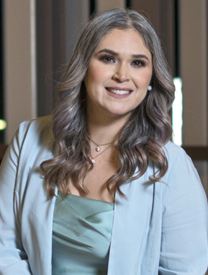

Odont. Yadira Inés
Fimbres Fimbres

Caries, el enemigo a vencer
Hasta un 80% de los menores de tres años tienen alguna lesión de caries, de ahí que el trabajo de la odontopediatra Yadira Fimbres está enfocado en prevenir este problema
Redacción BS
edicionrevistabs@gmail.com
El desarrollo de las caries comprende varias etapas, este problema comienza como una manchita blanca que luego se torna amarilla, cuando hay una desmineralización más severa, después se hará una cavidad, en casos más avanzados, la caries puede alcanzar la pulpa o nervio del diente, explicó en entrevista con Revista BS Yadira Inés Fimbres Fimbres.
La especialista en odontopediatría habló de las complicaciones que puede conllevar un caso de caries mal atendida.
“Puede ocasionar una infección, que es un proceso en el que la caries llega al nervio dental, se inflama el labio, el cachetito, hay veces que llegan hasta con el ojo cerrado por el proceso de infección”, alertó la especialista.
Caída prematura del dientito, lo que a su vez podría acarrear que se pierda el espacio para el posterior diente permanente es otro de los problemas de caries que evolucionan.
“Las funciones de los dientes de leche es mantener el espacio para los dientes permanentes, guiar su erupción”, detalló la experta, “sirven para la masticación, la fonación y, lógicamente, para la estética”. Por estas importantes funciones es crucial poner especial cuidado a los pequeños dientitos de leche de los menores, pues su pérdida puede tener implicaciones futuras en la dentición permanente.
“Es muy importante acudir al odontopediatra desde que salga el primer dientito para darle indicación a los papás de cómo llevar el cuidado de higiene bucal, y evitar que tengan lesiones de caries”, apuntó.
Actuar a tiempo
Cuidar y preservar la función de los dientes de leche desde el momento en que comienzan a aparecer en la boquita de los bebés es una de las grandes misiones que mamás y papás tienen, la recomendación de la especialista es acudir a su primera consulta con el odontopediatra a los seis meses de vida del bebé, que es la edad en la que, en promedio, sale el primer diente.
“Todo es cuestión de prevención. Lo que queremos es evitar que nuestros pacientitos lleguen a tratamiento. Lo más importante en odontopediatría es la prevención”, enfatizó.
Con ánimo de promover hábitos de cuidado tempranos, la especialista dio algunas recomendaciones que permitirán a los pequeños gozar de una boquita sana y libre de dolor.
“Acudir regularmente al odontopediatra, cada seis meses a su limpieza y aplicación tópica de flúor, usar una pasta con flúor, mínimo mil partes por millón de flúor para que ayude a prevenir caries, es lo primordial. Cepillar tres veces al día, sobre todo en la noche, es muy importante que se duerman con los dientitos bien limpios”, concluyó.